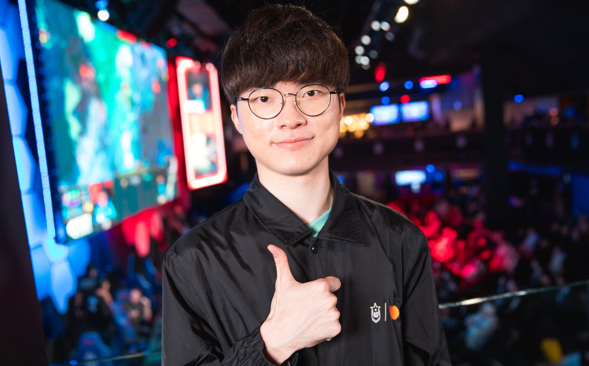

Introduction
Home
Life
Awards
李相赫（韓語：이상혁／Lee Sang-Hyeok）
生日：1996年5月7日
遊戲ID：Hide on bush
是一名韓國《英雄聯盟》職業選手，目前效力T1（前SKT T1）戰隊。
因為其出眾高超的遊戲操作能力，而被玩家和對手暱稱「大魔王」和「李哥」等。
2016年12月，《朝鮮日報》通過在此之前結束的英雄聯盟2016賽季世界大賽介紹
了英雄聯盟，並將Faker稱為國民級運動員，此外還將Faker的影響力比作朴智星（
足球員）、金妍兒等運動員。
2019年4月，Faker入選《富比士》年度傑出青年「30 Under 30」亞洲區傑出青年
中的「運動與體育」項目，成為韓國首位入圍該獎項的英雄聯盟選手。
寧願看廣告不買 Youtube Premium、環球影城不買快速通關、請隊友可樂 5 個人喝一罐...，而現在 Faker 的節儉傳說又要多記上一筆，即便已經是《英雄聯盟》最偉大的職業選手了，Faker 驚人的表示，他從來沒用過網路吃到飽。
